The following diagram shows zone diagrams
where each point in a circle is a class. This shows hundreds of classes and their
relations to each other.
Many of the created diagrams are similar to UML, but have optional additional
features. The diagrams can be edited manually and saved as .SVG files.
The following diagram shows a class diagram that shows inheritance,
aggregation, and class methods that use other classes.
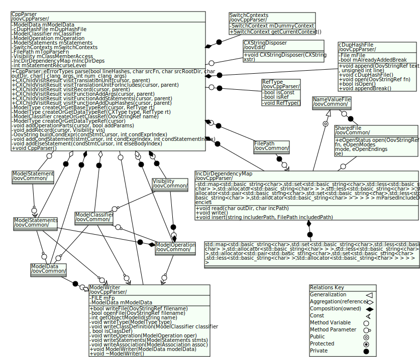
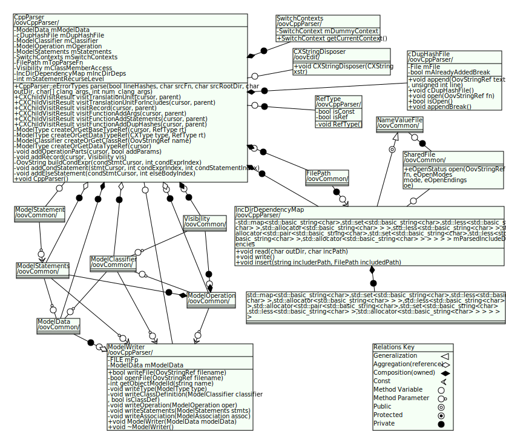
The following diagram shows a portion
diagram that shows the composition of a class. It shows which methods use
which member variables.
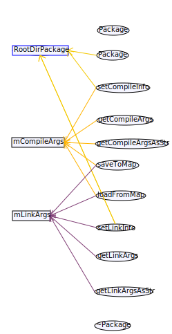
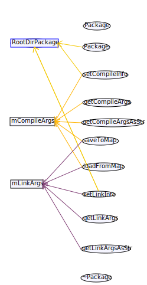
The following diagram shows a sequence diagram that shows conditionals
and method calls in classes.

Oovcde has a multithreaded build system
that uses dependency information from the analysis for easy setup, and also
supports cross compiling.
The following shows the build settings dialog.
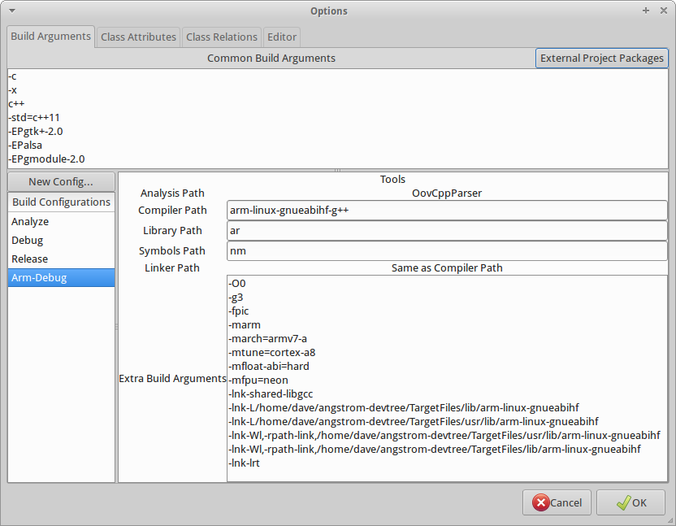
There are other documents including Component diagrams and Include diagrams.
The code editor has syntax highlighting, code completion, and a debugger.
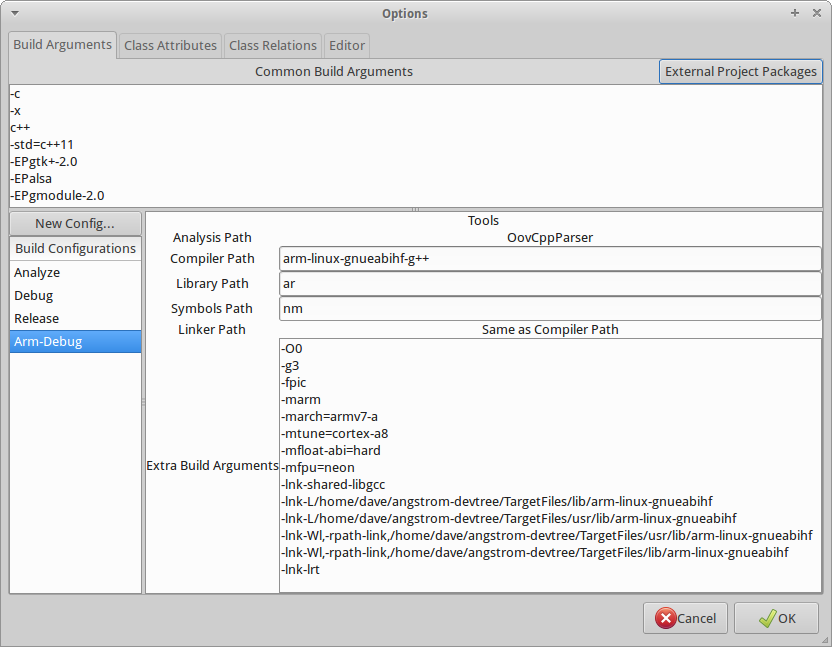
The following shows the code editor.
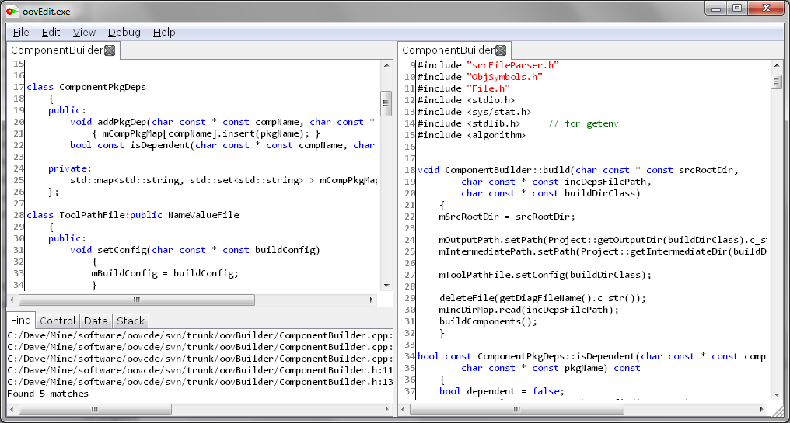
Complexity measurements are provided for
each method of a class.
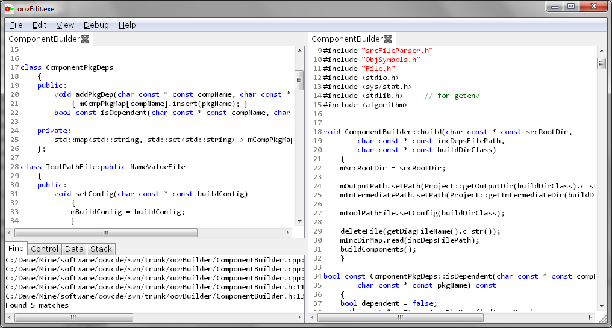
The following shows the complexity analysis results.
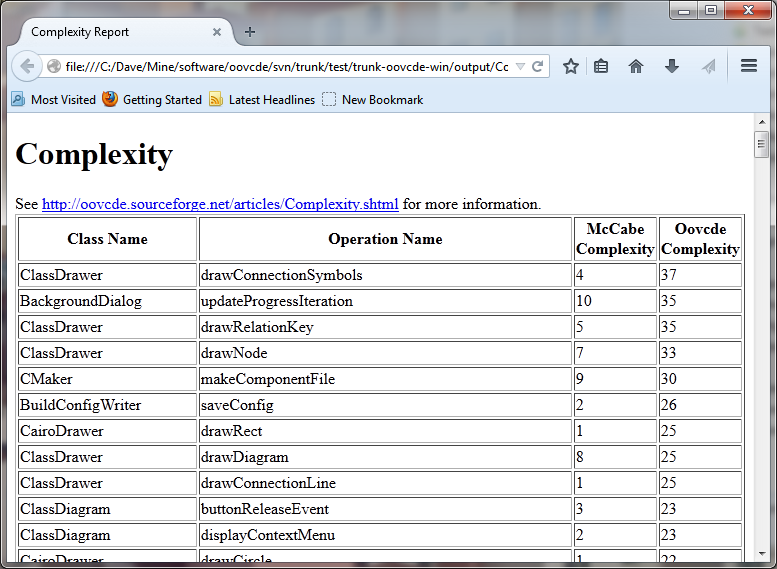
Code test coverage instruments the
code and produces coverage information.
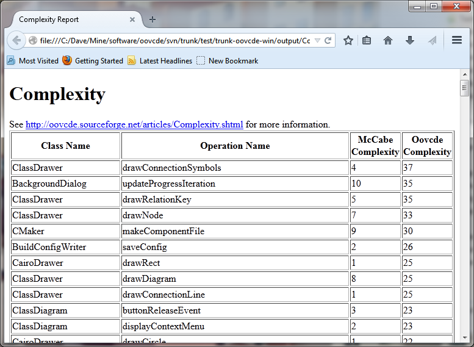
The following shows the output from test coverage, and
shows the number percentage of the file that was covered.
In addition, it is possible to view how many times each
block of code was run.
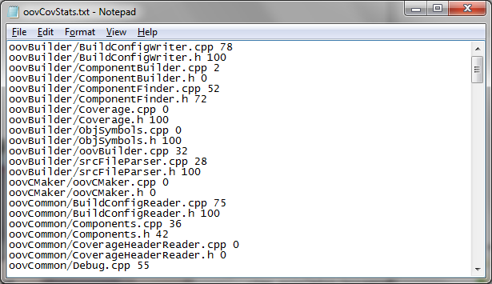
Duplicate code is found and listed.
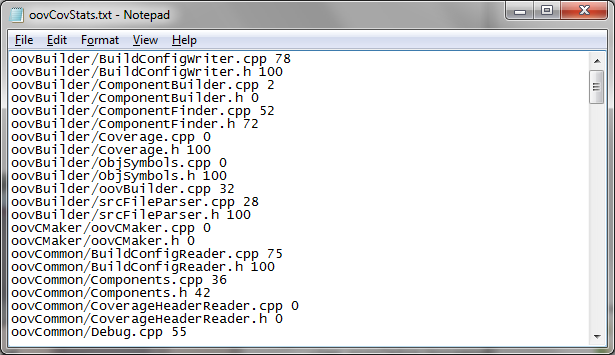
The following shows the output from duplicate code detection and
shows the number of lines that match.
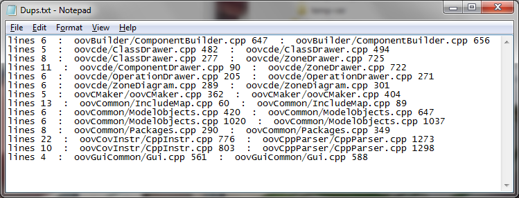
There are other statistics displayed as well.
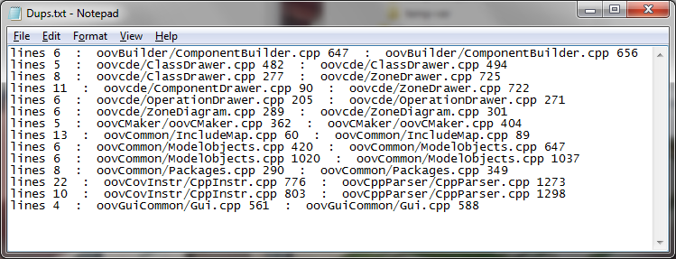
For more information, see the User Guide, and for an example of design documents that can be created with Oovcde, see the Oovcde Design document.
Project Goals
- Mainly for C++, or CLang related languages with header files and classes
- Visibility of code and design information
- Focused on programmer productivity with no hassles and papercuts
- Facilitate high quality design and code
- Use modern computer architectures, flash disks, multicore processing, work in the background
- Fast, lightweight, minimal dependencies
- Separate source files from output artifacts